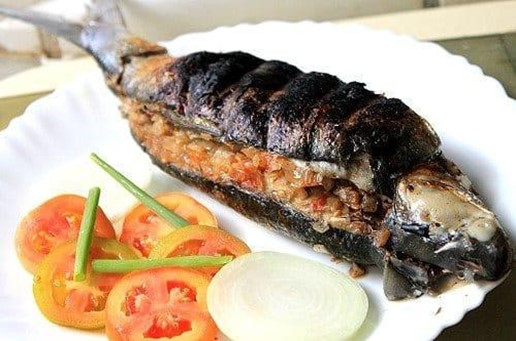

Inihaw na Bangus
What is Inihaw na Bangus?
Inihaw na Bangus or grilled milkfish is a perfect dish to make during warm weather. I like it best when grilled over charcoal because it gives the fish a nice smoky flavor. This recipe will give you a simple yet delicious dish that is quick and easy to make.
Ingredients
1pc. about Kilo, large sized Bangus or Milkfish
2 pcs. medium tomato, chopped
1 pc. medium onion, chopped
1 thumb size ginger, minced
1/4 head garlic, chopped
1/4 cup bagoong alamang
2 pc. green sili
salt and pepper
3-4 tablespoons Soy sauce
4 pieces Calamansi (lime)
1 to 2 pcs Siling Labuyo (Chili) (optional)
Instructions / How to Cook
1. Clean the Bangus or Milkfish, must keep the scales intact.
2. Slice the back of the milkfish and remove innards leaving the stomach fats.
3. Season the skin and cavities with salt and pepper then set aside.
4. To prepare stuffing, in a bowl toss onion, ginger, tomato and bagoong alamang.
5. Stuff milkfish cavity with the mixture and stuff the green sili at the middle of cavity.
6. Wrap milkfish with aluminium foil.
7. Grill over charcoal for 15 to 20 minutes on each side.
8. Serve Hot with Soy Dip.